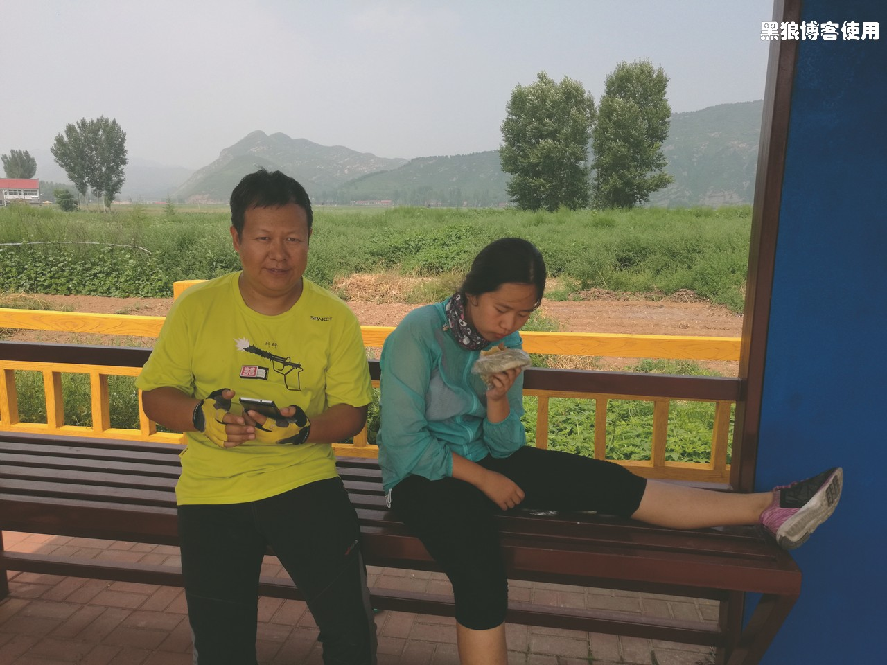
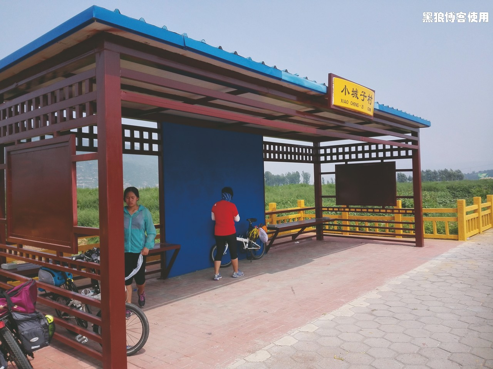
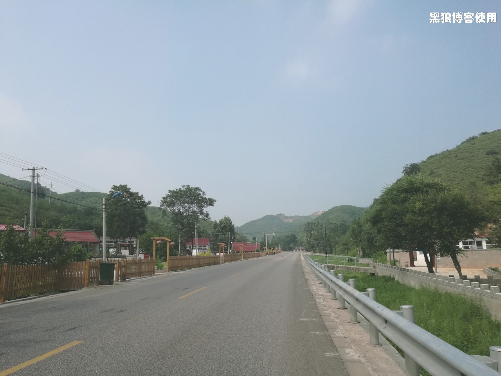
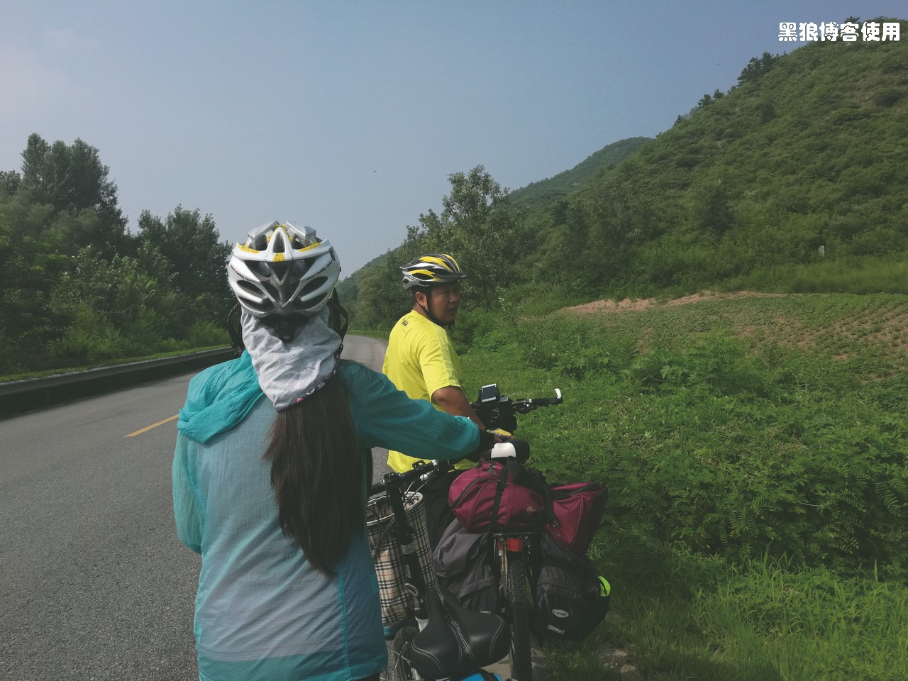
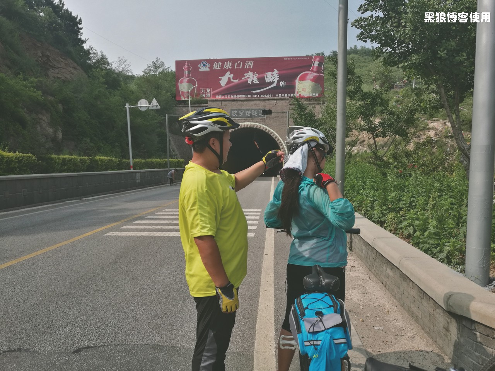
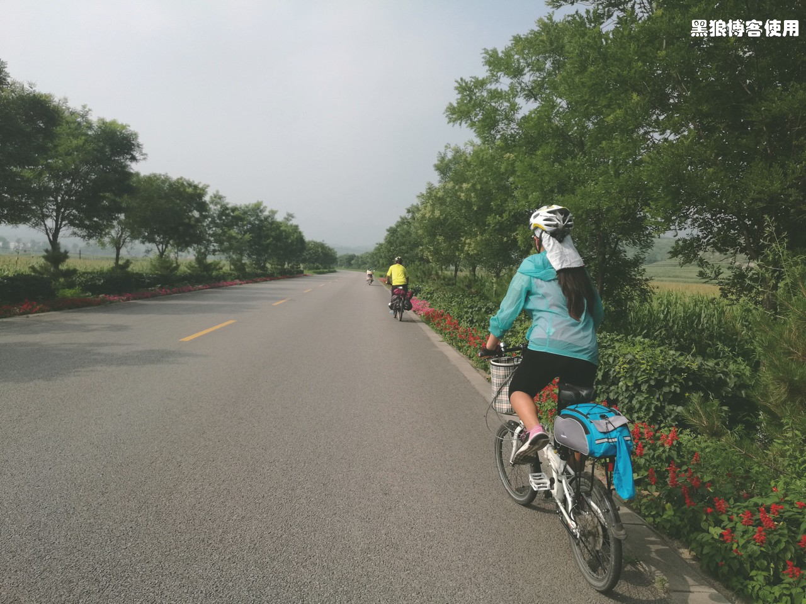
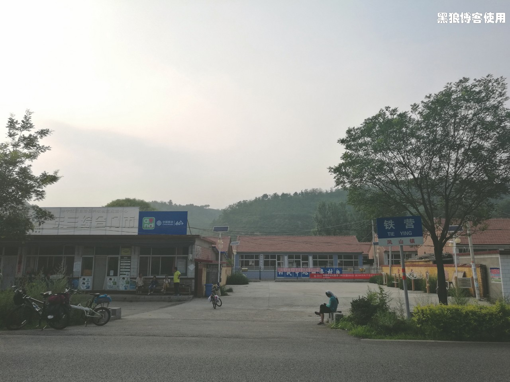
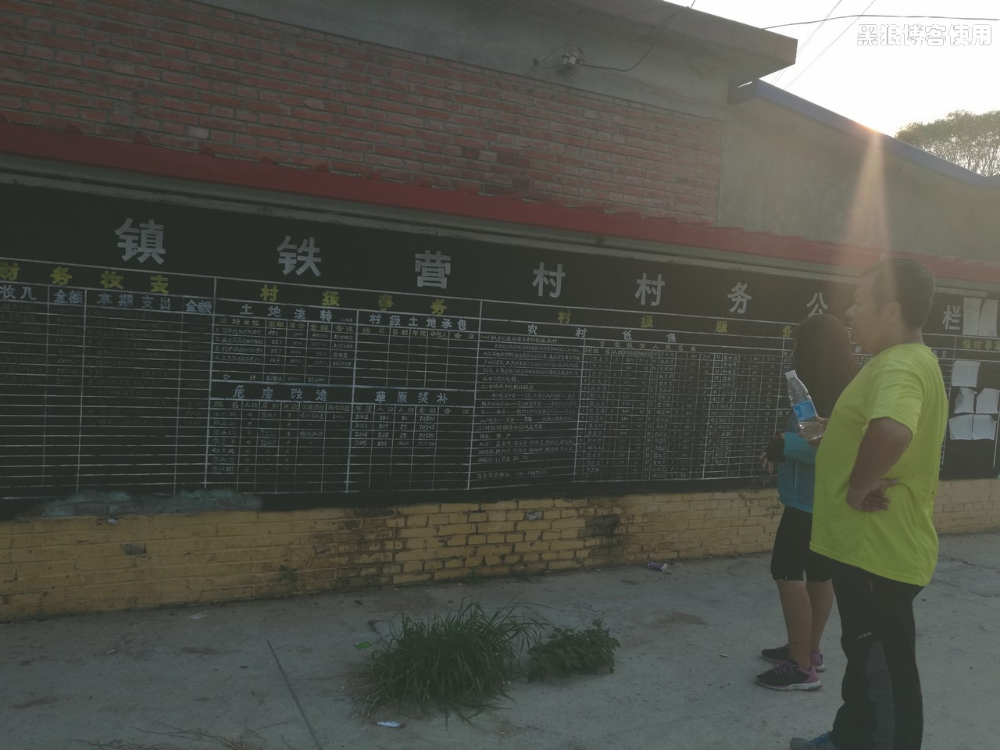
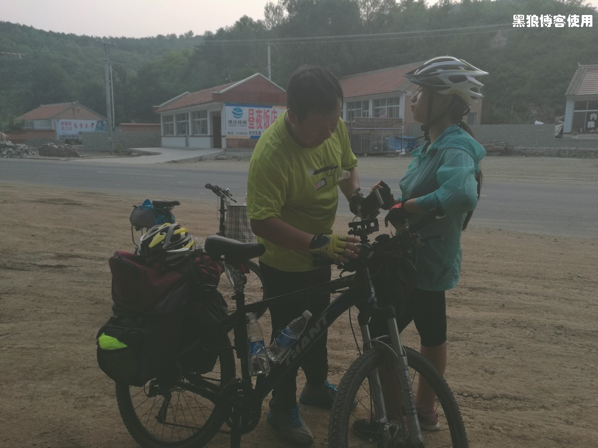
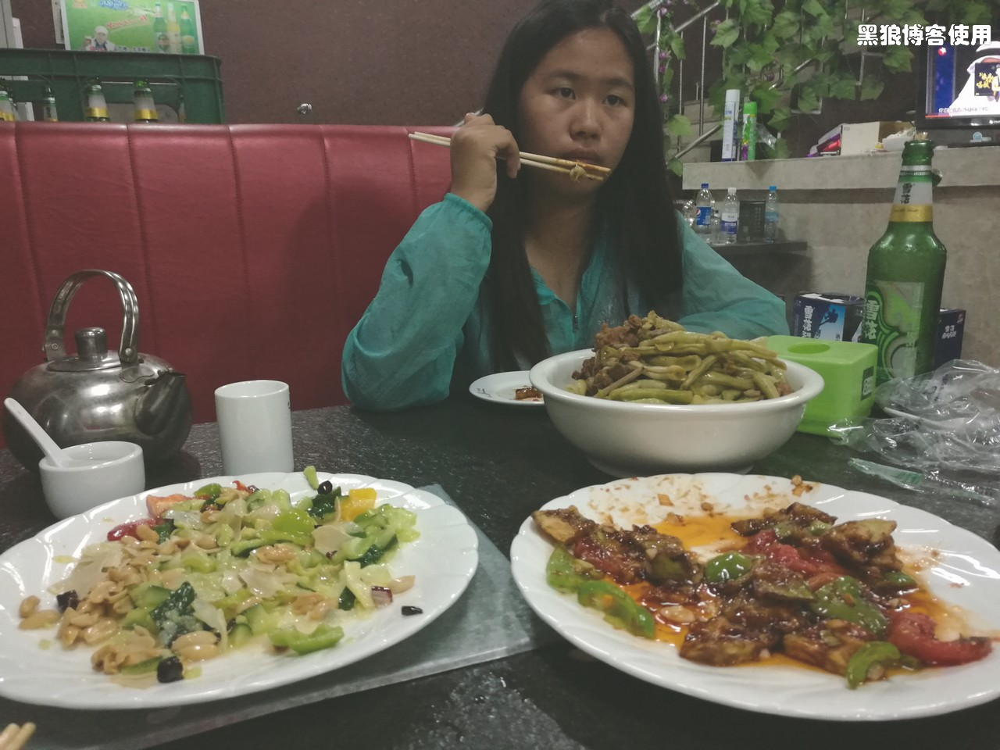

骑向乌兰布统（第四天，凤山镇）
黑狼语录：
—— 孩子的一个让家长很不喜欢的小目标，却总能产生很大的动力，例如：方小玉的“晚上要住好宾馆”。
今天是 7 月 29 日，骑行乌兰布统的第四天，天气预报还是有雷阵雨，不过昨天天气预报的雷阵雨只下了几分钟的雨。
昨晚我一直在考虑是否在滦平县休整一天，这很令人纠结。主要的原因有二：一是方玉说她的左手不能握紧拳头，我担心的是神经受损，我不下十余次的抓住她的手掌和手腕，感觉她的状况，但是她却并不配合。最后在我很严肃地告诫她要把真实的感受告诉我，否则可能会受到运动伤害，她才说出她的真正感觉，初步判断是肌肉疲劳所致；二是胡有理要在 7 月 30 日赶回北京，然后出差西藏，我希望三口人能在一起多骑行一天，最好能继续骑行到凤山镇，那里有回北京的长途汽车。
一早 8 点起来，到昨天老板推荐的十全十美吃早餐，今天很顺利找到，离宾馆并不远，昨天居然没有看见那个醒目的招牌。
饭后，我问方玉昨天的运动过量是否恢复，手部的感觉是否好转，得到她肯定的回答，决定今天继续前进。说起运动过量，是在昨天完成骑行后，我和方玉在做深呼吸时感觉肺部不适，不敢吸满气，初步判断为过量。
基于目前的身体状况（重点考虑方玉），重新调整了骑行的节奏，决定：每天尽量控制在 50 公里左右，并且在每骑行 5 公里左右休息一会儿，路线优先选择县级路和省级路，7 月 30 日休息一天。
早上起床后，我感觉到浑身酸软，方玉说她浑身上下已经没有不酸的地方了，她坚持今天要么休息，要么只骑行 20 公里。胡有理倒是感觉非常良好，这跟她这一段时间以来坚持运动有关。
上午在宾馆休息观察，感觉方玉没有问题，可以继续骑行，到了中午 12:50，出发！目的地是波罗诺镇，距离 26 公里。
13:30 在小城子村的候车站休息。我的脸和胳膊明显地变黑了。
这个候车站比经过的其它站点都要“豪华”。
15:00 刚刚在一个小店休息片刻，店主居然连离家几公里的这个修缮一新的村子都没有来过。
15:10 坡路，推着走。方玉现在感觉走路很舒服，她说她不喜欢骑自行车了。
15:20 马上要穿过前面的长约 1 公里的隧道，骑自行车过隧道要注意安全，我在检查并开启每个人帽子上的闪光警示灯。
我让她们两个跟在我的后面，这个隧道是个下坡路，速度要控制住。我告诫她们两个，以前我有一次骑行过隧道时，感觉自行车很难保持平衡，总是左右晃，让她们注意朝远处看。
顺利穿过隧道后，继续前进，马上就要到达波罗诺镇了。
在 15:40 抵达波罗诺镇，这个小镇上宾馆很少，路过三个宾馆后，我们坐在这家宾馆门前的台阶上休息，坐在镇子中心的路边，喝水、吃东西、晒太阳，很爽很惬意，仿佛小时候那样随心所欲。
方玉对这个镇子的宾馆大失所望，在犹豫、思考了 40 分钟后决定到凤山镇再入住宾馆，距离还有 24 公里。
17:30 在凤山铁营村休息，我和胡有理在跟村子里的人扯家常，方玉在路边看手机，她还不习惯和陌生人攀谈。
旁边就是村子的财务公开榜，方玉在研究村子中的人每月大概有多少收入。
18:50 离凤山镇还有 5 公里左右，休息一下。本想定一个宾馆，给三个宾馆打了电话，结果都满了，一群当年在凤山当兵的老人聚会，几乎所有的宾馆都住满了。
接下来的路程，大家心事重重，我说没关系肯定有地方住的。
19:20 到了凤山镇。
当问到第三家宾馆后，终于还有两个标准房间空着，看过房间后，方玉很不满意，于是让胡有理在那里先盯着，拉上我又继续寻找宾馆。
又问了几家后均是客满。我看到了杏林宾馆的小牌子，上面的箭头指向旁边的胡同，方玉看了牌子后根本就没兴趣过去看房间，最后还是被我拉着过去看了看，没想到在巷子里居然还有一家不错的宾馆，决定今晚就在这里了，定了两间，并答应方玉明天换一个更好的，她很高兴的答应了。
找宾馆用了将近 40 分钟。
21:00 在吃饭，这里的菜量很大。
吃饭间方玉说准备明天继续骑行，为了住更好的大酒店，也为了能像今天路上遇到的那个骑了 200 公里的骑友那样，她希望明天可以至少骑到 100 公里。
今天骑行了 50 公里，一路上在群山中骑行，穿过一个个村庄，风景很不错。恰巧赶上了凤山镇的老兵聚会，在晚上将近十点的时候，还有一群人在四
处找宾馆，幸好我们已经捷足先登。
明天是 30 号，胡有理要赶回北京，我和方玉就在凤山镇休息一天。